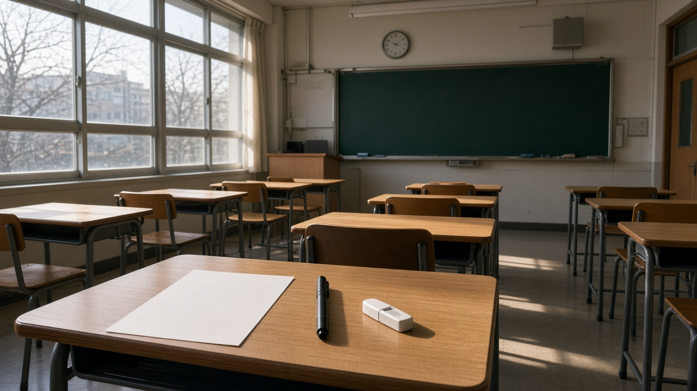

한능검 제81회 원서접수가 11월 10일 오후 5시에 끝나요, 2027년 9급 공무원 한국사는 심화 3급 이상이어야 해요
내년 9급 공무원 시험을 준비하고 있는데 아직 한국사능력검정시험 등급이 없다면 요즘 마음이 급하실 거예요.
2027년부터 9급 공채 필기에서 한국사 과목이 빠지고 한능검 등급으로 대신하게 되면서, 언제까지 어떤 등급을 따 둬야 하는지가 가장 많이 묻는 질문이 됐어요.
마침 인사혁신처가 11월 5일 내년 국가공무원 시험 일정을 발표했고, 국사편찬위원회도 11월 3일 2027년 한능검 시행 일정을 올렸어요.
올해 마지막 시험인 제81회 접수가 곧 끝나니, 놓치지 않도록 날짜와 기준을 차근차근 정리해 볼게요.
올해 마지막 한능검인 제81회 접수는 11월 10일 오후 5시까지예요
국사편찬위원회 한국사능력검정시험 누리집을 보면 제81회 정기 원서접수는 11월 3일 오전 10시에 시작해 11월 10일 화요일 오후 5시에 마감돼요.
처음 며칠은 지역을 나눠 차례로 받았고, 11월 6일 오후 1시부터는 전 지역이 함께 접수할 수 있게 열려 있어요.
시험은 11월 28일 토요일 오전 10시에 치르고, 합격자 발표는 12월 11일 금요일이에요.
제81회는 심화 시험만 치르기 때문에 1급에서 3급을 받으려는 분께 해당하는 회차예요.
정기접수를 놓쳤다면 11월 11일 오후 1시부터 11월 13일 오후 5시까지 취소좌석 접수가 있지만, 정기접수 뒤 남은 자리가 있을 때만 열린다는 점은 알아 두셔야 해요.

2027년 9급 공채는 한능검 심화 3급 이상, 필기 전날까지 발표된 등급만 인정돼요
인사혁신처 발표에 따르면 2027년 9급 공채 필기시험은 3월 27일에 치러져요.
필기시험 공통과목이던 한국사는 국사편찬위원회가 주관하는 한국사능력검정시험 3급 이상으로 대체되고, 필기시험 전날까지 발표된 시험의 등급만 인정된다고 밝혔어요.
3급은 심화 시험에서 60점 이상 69점 이하를 받으면 주어지는 등급이라, 기본 시험의 4급에서 6급으로는 이 기준을 채울 수 없어요.
반가운 점도 있어요.
인사혁신처는 지난해 7월 개편안을 내면서 한능검에는 따로 인정 유효기간을 두지 않아 예전에 딴 3급 이상도 모두 인정된다고 안내했어요.
이미 오래전에 3급 이상을 받아 두셨다면 다시 볼 필요 없이 인증서 조회가 잘 되는지만 확인해 두시면 돼요.
내년 2월 제82회까지 남은 회차를 놓고 일정을 따져 보면 이래요
제81회에 응시하면 12월 11일에 결과가 나오니 3월 27일 필기보다 한참 앞서 등급을 확인할 수 있어요.
2027년 첫 시험인 제82회는 2월 13일 토요일에 치르고, 정기접수는 1월 12일 오전 10시부터 1월 19일 오후 5시까지예요.
다만 국사편찬위원회가 올린 2027년 시행 일정에는 회차별 합격자 발표일이 아직 적혀 있지 않아요.
그래서 제82회를 마지막 기회로 생각하신다면 발표일이 필기 전날보다 앞서는지 회차 안내가 나올 때 꼭 확인하셔야 해요.
결과가 기대에 못 미칠 때 다시 응시할 여유까지 생각하면, 제81회부터 한 번 보아 두는 쪽이 일정상 덜 쫓기는 선택이에요.
참고로 국사편찬위원회는 2027년 9급 시험 대체로 응시자가 늘 것에 대비해 올해에 한해 시험을 한 번 더 편성했다고 밝혔어요.
5급과 7급은 2급 이상이고, 내년부터는 원서접수 마감일이 기준이에요
같은 한능검이라도 5급 공채와 외교관후보자, 7급 공채는 공무원임용시험령에 따라 2급 이상을 받아야 해요.
인사혁신처는 내년부터 이 시험들의 1차 시험이 공직적격성평가로 바뀌면서 영어와 한국사 같은 대체 시험 성적의 인정 기준일도 달라진다고 밝혔어요.
지금까지는 1차 시험 전날까지 발표된 성적을 인정했지만, 내년부터는 각 채용시험의 원서접수 마감일까지 발표된 성적만 인정돼요.
이에 따라 5급 공채와 외교관후보자는 3월 8일까지, 7급 공채는 7월 16일까지 발표된 성적이어야 해요.
9급만 필기 전날 기준이고 5급과 7급은 날짜가 더 앞당겨진 셈이라, 준비하는 직급에 맞춰 기준일을 따로 적어 두세요.
접수 전에 이것만은 확인해 두세요
심화 시험은 50문항 5지선다로 80분 동안 치르고, 응시료는 2만 7천 원이에요.
접수를 취소할 때는 11월 17일 오후 5시까지는 전액, 11월 18일부터 20일 오후 5시까지는 절반을 돌려받을 수 있어요.
시험장 변경은 11월 11일부터 20일까지, 수험표 출력은 11월 24일 오전 10시부터 가능해요.
합격 여부는 따로 우편으로 오지 않고 누리집이나 정부24에서 직접 성적을 조회하고 인증서를 출력하는 방식이에요.
직렬별 선발 인원과 응시 자격 같은 세부 내용은 인사혁신처가 내년 1월 초 공고할 예정이니, 최종 기준은 그 공고에서 다시 확인하시는 게 가장 정확해요.
참고 자료 국사편찬위원회 한국사능력검정시험 누리집 시험 일정 및 2026년 11월 3일 공지 2027년도 한국사능력검정시험 시행 일정, 인사혁신처 2026년 11월 5일 보도자료 내년도 공직적격성평가 국가공무원 시험 일정 발표, 인사혁신처 2025년 7월 2일 보도자료 9급 공무원 시험 한국사 과목 대체 문항수 개편, 공무원임용시험령 별표 4
태그 한국사능력검정시험 한능검 한능검81회 한능검일정 9급공무원 공무원한국사 한능검3급 2027공무원시험 인사혁신처 국사편찬위원회